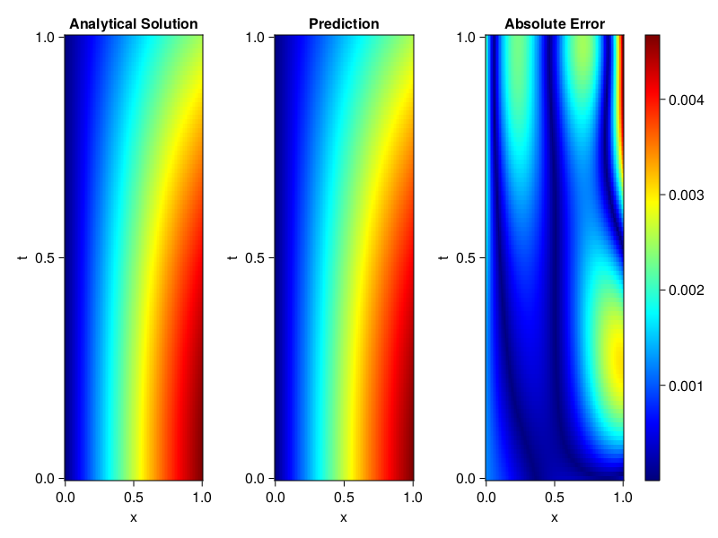
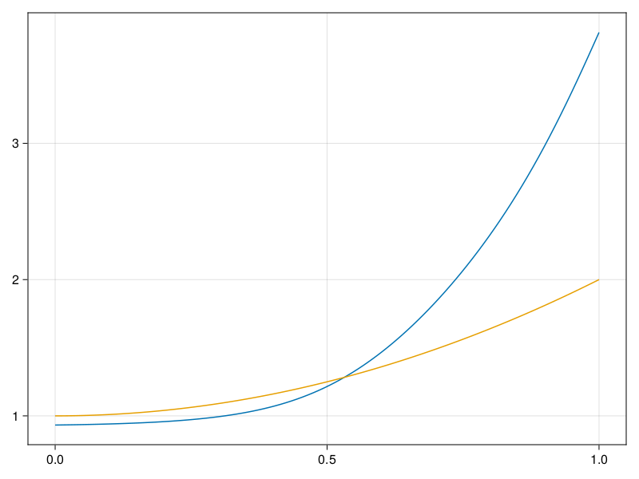

Inverse problem for the wave equation with unknown velocity field
We are going to sovle the wave equation.
using Sophon, ModelingToolkit, IntervalSets
using Optimization, OptimizationOptimJL
@parameters x, t
@variables u(..), c(..)
Dₜ = Differential(t)
Dₜ² = Differential(t)^2
Dₓ² = Differential(x)^2
s(x,t) = abs2(x) * sin(x) * cos(t)
eq = Dₜ²(u(x,t)) ~ c(x) * Dₓ²(u(x,t)) + s(x,t)
bcs = [u(x, 0) ~ sin(x),
Dₜ(u(x, 0)) ~ 0,
u(0, t) ~ 0,
u(1, t) ~ sin(1) * cos(t)]
domains = [t ∈ Interval(0.0, 1.0),
x ∈ Interval(0.0, 1.0)]
@named wave = PDESystem(eq, bcs, domains, [t,x], [u(x,t),c(x)])\[ \begin{align} \frac{\mathrm{d}}{\mathrm{d}t} \frac{\mathrm{d}}{\mathrm{d}t} u\left( x, t \right) =& c\left( x \right) \frac{\mathrm{d}}{\mathrm{d}x} \frac{\mathrm{d}}{\mathrm{d}x} u\left( x, t \right) + \cos\left( t \right) \left|x\right|^{2} \sin\left( x \right) \end{align} \]
Here the velocity field $c(x)$ is unknown, we will approximate it with a neural network.
pinn = PINN(u = FullyConnected((2,16,16,16,1), sin),
c = FullyConnected((1,16,16,1), tanh))
sampler = QuasiRandomSampler(500,100)
strategy = NonAdaptiveTraining(1, (10,10,1,1))NonAdaptiveTraining{Int64, NTuple{4, Int64}}(1, (10, 10, 1, 1))Next we generate some data of $u(x,t)$. Here we place two sensors at $x=0.1$ and $x=0.5$.
ū(x,t) = sin(x) * cos(t)
x_data = hcat(fill(0.1, 1, 50), fill(0.5, 1, 50))
t_data = repeat(range(0.0, 1.0, length = 50),2)'
input_data = [x_data; t_data]
u_data = ū.(x_data, t_data)1×100 Matrix{Float64}:
0.0998334 0.0998126 0.0997503 0.0996464 … 0.275281 0.267213 0.259035Finally we construct the inverse problem and solve it.
additional_loss(phi, θ) = sum(abs2, phi.u(input_data, θ.u) .- u_data)
prob = Sophon.discretize(wave, pinn, sampler, strategy; additional_loss=additional_loss)
@time res = Optimization.solve(prob, BFGS(), maxiters=1000)u: ComponentVector{Float64}(u = (layer_1 = (weight = [-0.01881234697535196 -0.5036580288382646; -0.2755136840705573 0.5269002601679356; … ; 0.2251052420173985 0.4915087747933458; -0.3169323173611798 -0.30059953476798634], bias = [0.12483480239248573; -0.535172843393628; … ; 0.2950343258739841; 0.5160205229425936;;]), layer_2 = (weight = [-0.3100009073710698 -0.057356417517025776 … -0.24627446360074487 -0.03704395562729716; -0.4050627206669965 0.32583887083343865 … -0.435859599444234 0.21543984501500674; … ; -0.05164709925293644 -0.12822316536712797 … -0.06744537920656658 0.11717729801801537; -0.3319421409653523 -0.32711525781475986 … -0.09450306307853319 0.0323981533018637], bias = [-0.10053771640469965; 0.23404113085916856; … ; 0.2592258386868285; 0.020757671812825666;;]), layer_3 = (weight = [-0.11210939957949774 0.7971170442831793 … 0.4801816917135883 -0.049942360651328586; 0.4247737218290574 0.40394161075237417 … 1.5625915837303213 0.0417254746717205; … ; 0.07248536726125991 -0.28123140400370794 … -0.07291376425894179 -0.5959068658099664; -0.11925706447403922 -0.35397488631299107 … -1.15955978152876 0.717078208996404], bias = [-0.12741019111653135; 0.5583429577303968; … ; -0.14266163215160088; 0.5534943275878634;;]), layer_4 = (weight = [0.29216902755298446 -0.053247424585498325 … 0.28868622019479373 -0.7213826402124008], bias = [0.43702916152840166;;])), c = (layer_1 = (weight = [0.8842926750326169; -0.6954021103771014; … ; 0.8861716712043669; -1.4795588729330487;;], bias = [-0.9776983508060754; -1.1242582885833197; … ; -1.216401603128052; 1.8669372625221798;;]), layer_2 = (weight = [-0.3999487167158758 0.2425543694069521 … -0.12522157243757776 0.46055903706819884; -0.09538998574272235 0.7067958519772155 … 0.2645674480879534 -0.06262513201595318; … ; 0.30091846611344336 0.18445976541338635 … -0.3466930108594721 0.9054364171678391; -1.0268796920665897 0.532386746962275 … -1.3199606373874304 0.7051275272466542], bias = [0.5448113118641629; -0.05873674594519483; … ; 0.5341314889851961; 0.9500603255535626;;]), layer_3 = (weight = [2.631047736049004 0.9906195631136565 … 2.9302579390966628 4.002820744564262], bias = [-3.6642448391955993;;])))Let's visualize the predictted solution and inferred velocity
using CairoMakie
ts = range(0, 1; length=100)
xs = range(0, 1; length=100)
u_pred = [pinn.phi.u([x, t], res.u.u)[1] for x in xs, t in ts]
c_pred = [pinn.phi.c([x], res.u.c)[1] for x in xs]
u_true = [ū(x, t) for x in xs, t in ts]
c_true = 1 .+ abs2.(xs) |> vec
axis = (xlabel="x", ylabel="t", title="Analytical Solution")
fig, ax1, hm1 = heatmap(xs, ts, u_true, axis=axis; colormap=:jet)
ax2, hm2= heatmap(fig[1, end+1], xs, ts, u_pred, axis= merge(axis, (;title = "Prediction")); colormap=:jet)
ax3, hm3 = heatmap(fig[1, end+1], xs, ts, abs.(u_true .- u_pred), axis= merge(axis, (;title = "Absolute Error")); colormap=:jet)
Colorbar(fig[:, end+1], hm3)
fig
fig, ax = lines(xs, c_pred)
lines!(ax, xs, c_true)
fig